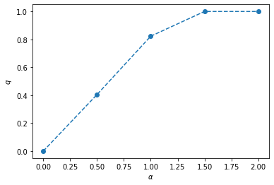
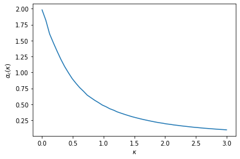

Contents
Storage capacity of a simple perceptron¶
Storage capacity of machine learning models is anaylzed by a method in Stastical mechanics [Gardner, 1988].
import numpy as np
import matplotlib.pyplot as plt
from scipy.special import erfc
def H(x):
return erfc(x / np.sqrt(2)) * 0.5
def H_1st_deriv(x):
return -np.exp(-x**2 / 2) / np.sqrt(2 * np.pi)
def H_2nd_deriv(x):
return np.exp(-x**2 / 2) * x / np.sqrt(2 * np.pi)
def saddle_point_equation(alpha, kappa=0.0, q_init=0.5,
num_samples=100000, c=0.9, max_step=200):
q = q_init
step = 0
eps = 1e-8
error = 1e10
while error > eps:
step += 1
q_prev = q
# q
z = np.random.randn(num_samples)
x = (kappa - np.sqrt(q) * z) / np.sqrt(1 - q)
h = H(x)
indices = np.where(h != 0)[0]
h = h[indices]
x = x[indices]
h1 = H_1st_deriv(x)
h2 = H_2nd_deriv(x)
int_z = (h1 / h)**2 - h2 / h
q = alpha * np.mean(int_z)
# qtilde
qtilde = q / (1 - q)**2
# Update
q = (1 - c) * q + c * q_prev
error = abs(q - q_prev)
Qtilde = (1 - 2*q) / (1 - q)**2
if q > 1.0:
q = 1.0
break
if max_step is not None and step >= max_step:
break
print(f'step={step}, Qtilde={Qtilde}, qtilde={qtilde}, q={q}')
return q
params = dict(
num_samples=100000,
c=0.99,
max_step=1000,
)
alpha_list = [0.0, 0.5, 1.0, 1.5, 2.0]
alpha_q_hists = {}
for alpha in alpha_list:
print(f'alpha={alpha}')
q = saddle_point_equation(alpha, kappa=1.0, **params)
alpha_q_hists[alpha] = q
alpha=0.0
step=1000, Qtilde=0.9999999995340407, qtilde=0.0, q=2.158562370532892e-05
alpha=0.5
step=801, Qtilde=0.5373326273852124, qtilde=1.1428611117978906, q=0.4048315426950762
alpha=1.0
step=1000, Qtilde=-20.574391619354625, qtilde=26.341073344259986, q=0.8228465636932442
alpha=1.5
step=210, Qtilde=-2387291405.2465324, qtilde=59.55624878953845, q=1.0
alpha=2.0
step=58, Qtilde=-2721684.4813690456, qtilde=146.29040847822128, q=1.0
plt.plot(alpha_list, list(alpha_q_hists.values()), marker='o', linestyle='--')
plt.xlabel(r'$\alpha$')
plt.ylabel(r'$q$')
plt.show()

Asymptotic form¶
In \(q \rightarrow 1\),
\[
\alpha_{\mathrm{c}}(\kappa)=\left\{\int_{-\kappa}^{\infty} \mathrm{D} y(\kappa+y)^{2}\right\}^{-1}
\]
def critical_alpha(kappa, num_samples=100000):
y = np.random.randn(num_samples)
Dy = (kappa + np.where(-kappa <= y, y, 0))**2
return 1 / np.mean(Dy)
kappa_list = np.linspace(0, 3, 50)
alpha_c_hists = []
for kappa in kappa_list:
alpha_c = critical_alpha(kappa)
alpha_c_hists.append(alpha_c)
plt.plot(kappa_list, alpha_c_hists)
plt.xlabel(r'$\kappa$')
plt.ylabel(r'$\alpha_c(\kappa)$')
plt.show()

References¶
- Gar88
E Gardner. The space of interactions in neural network models. Journal of Physics A: Mathematical and General, 21(1):257–270, January 1988. URL: https://iopscience.iop.org/article/10.1088/0305-4470/21/1/030 (visited on 2021-10-08).